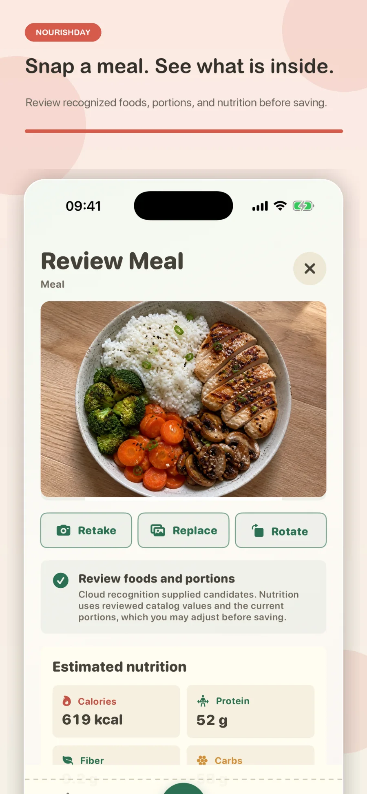
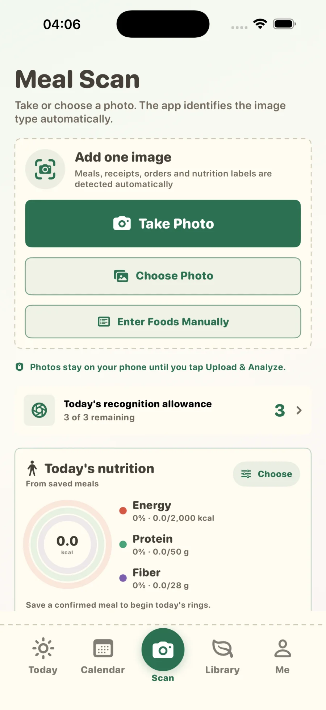
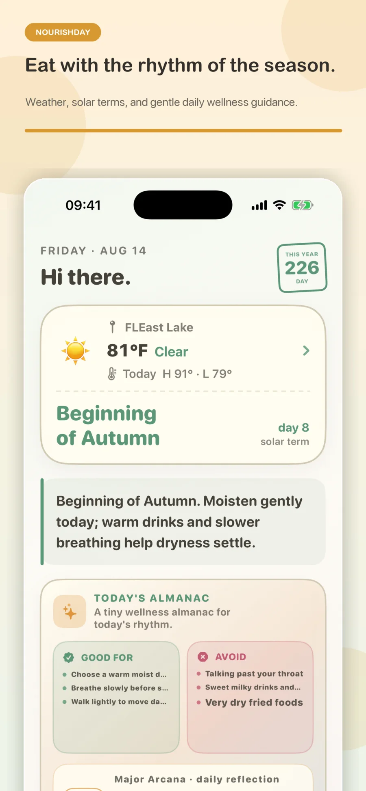
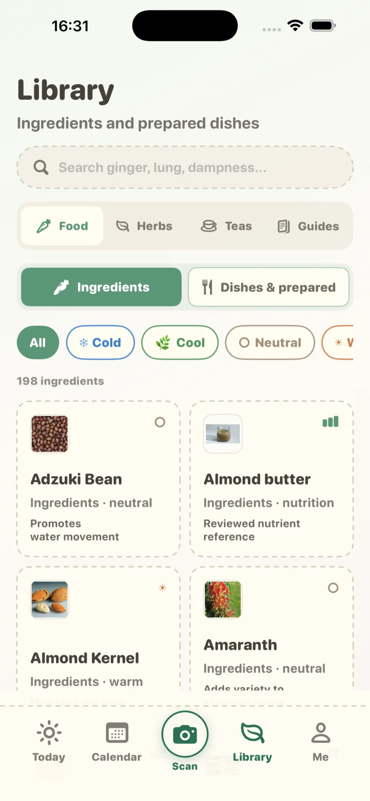

当前正在内测即将上线 App Store
食养日历 · NOURISHDAY
一张照片，
更清楚地看见每天怎么吃。
Snap a meal. Nourish your day.
拍摄或选择一张图片。食养日历会自动判断它是餐食、小票、订单还是营养成分表；所有细节都由你复核后，才会保存到营养日历。

一张图片，三个清晰步骤
开始更快，
决定权仍在你手中。
最新拍餐体验把相机、照片和手动录入放在同一个入口。图片类型会先在设备本地判断，再进入原有上传流程。
- 01添加一张图片可使用餐食照片、小票、订单截图或包装食品的营养成分表。
- 02上传前确认如有需要，可修正自动判断的类型；只有点击“上传并分析”后才会上传。
- 03复核、调整并保存食物、份量、餐次、时间和实际食用份数都可编辑。

连续两周的营养节奏
十四天之后，
圆环开始形成趋势。
一天只能看到一个切片。连续记录两周并确认餐食后，日历会逐渐呈现稳定度、缺口和营养平衡的变化。
14连续记录天数
32已确认餐食
3重点营养素
以下为示意数据，用于展示连续使用两周后的营养日历效果。
8 月 4–17 日连续记录 14 天
能量蛋白质膳食纤维
4
5
6
7
8
9
10
11
12
13
14
15
16
17
第一周 7 天中有 5 天记录较完整第二周 7 天中有 6 天记录较完整
不只是一款热量记录工具
把营养放回
真实生活的背景中。
食养日历把确认后的餐食与时间、地点、天气、节气和实用食养知识连接起来，同时明确区分估算与医疗结论。
自动识别，随时可改
所有餐食记录共用一个入口
直接使用相机或照片，无需先选模式。本地文字证据会区分餐食、小票、订单与营养成分表；证据不足时会安全地按餐食照片处理。
餐食•小票•订单•营养标签
经复核的营养，不把模型猜测当结论
清楚知道数值从哪里来
识别只提供可见食物与份量候选。确认后映射至整理过的食物目录；营养成分表则保留你核对后的印刷数值。
能量 84%蛋白质 78 g膳食纤维 25 g
能看见营养的日历
按天看懂饮食变化
在天气和营养视图之间切换，查看每日摄入环，并持续回看已确认的餐食与历史记录。
日DAY BY DAY
天气与二十四节气
跟随季节的节奏
查看当前天气、空气质量、农历与节气，以及当天的食物、茶饮和温和生活方式参考。
天气空气质量节气茶饮
双语食养百科
一次搜索所有分类
用中英文探索数百条食材、菜品、草本、茶饮与食养指南，查看属性、注意事项和可用的经复核营养信息。
食材菜品草本茶饮
覆盖你的 Apple 设备
随时查看近期营养
主屏幕小组件和 Apple Watch 会以隐私受限的方式显示当天及近七天摘要，并跟随你选择的重点营养素。
84%能量156%蛋白质89%膳食纤维
当前 APP 体验
围绕你确认的选择而设计。
展示完整 App 界面，不再叠加顶部宣传文案，也不使用装饰性裁切，让实际功能更清楚。
- 添加一张图片，自动判断类型
- 复核食物、份量或印刷数值
- 今日天气、节气与每日背景
- 百科全分类中英双语搜索


免费开始，需要时再升级
核心功能无需订阅，
也可以持续使用。
登录后即可使用食养日历的持续免费方案。Premium 完全可选，用于获得更高额度与更长历史。
免费方案
建立每天的节奏
适合开始记录并保留近期营养轨迹。
- 每天最多 3 次图片分析
- 查看最近 7 个自然日的营养记录
- 今日、日历、拍餐、百科和我的五个核心标签
- 英文与简体中文
可选 PREMIUM
查看更多历史，提高拍餐额度
适合需要完整历史、计划与跨设备体验的用户。
- 每天最多 20 次图片分析
- 不限时间查看全部营养记录
- 完整营养日历
- 个性化参考与跨设备同步
订阅可用性、价格和试用资格以 App Store 购买页面为准，并可能因商店地区而异。
为信任而设计
AI 提供建议，
最终由你决定。
确认前不会上传
所选图片会留在设备上，直到你明确点击“上传并分析”。
结果始终可以编辑
食物、份量、餐次、时间和实际食用份数都由你控制。
明确说明健康内容的边界
识别、营养、体质偏好和传统食养内容均为教育与一般健康参考，不用于诊断或治疗。
常见问题
关于食养日历
食养日历什么时候上线 App Store？＋
食养日历目前正在内测，我们正在完成最后的验证与上架准备，很快就会在 App Store 上线。公开下载链接上线后会第一时间出现在本页面。
食养日历能识别哪些图片？＋
可以选择一张餐食照片、小票、订单截图或包装食品营养成分表。本地文字证据会自动选择最可能的处理方式，分析前也可通过紧凑菜单修正。
照片中的营养估算可靠吗？＋
图片识别只提供候选食物与估算份量。你先复核或修改，确认后的食物再映射至整理过的目录营养值；印刷营养成分只保存你确认过的数值。
不订阅 Premium 可以使用吗？＋
可以。持续免费方案保留五个核心标签，每天最多提供三次图片分析，并可查看最近七个自然日的营养记录，无需付款方式。
食养日历会提供医疗建议吗？＋
不会。食物识别、营养总量、体质偏好和节气食养内容只用于教育与一般健康参考。涉及疾病、过敏、孕期、用药或饮食限制时，请咨询专业人员。
Apple Watch 和小组件支持什么？＋
iPhone 会发布有限范围的近期摘要与三项所选营养素。小组件显示当天或近七天；Apple Watch 还提供当天总量、全部支持营养素、近期日期与离线缓存。
食养日历支持英文吗？＋
支持。iPhone、iPad、小组件与 Apple Watch 的核心体验均支持英文和简体中文。点击页面顶部的“EN”可查看默认英文网站。
当前内测 · 即将上线
今天正在内测，
很快上线 App Store。
食养日历 · NourishDay
Snap a meal. Nourish your day.